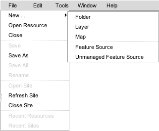
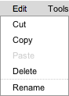
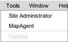
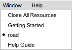

Main Menu
The main menu of the application appears at the top of the application. The main menu contains five sub menus: file, edit, tools, window, and help. Each is discussed below.
File Menu

- New
- The New menu opens a sub-menu that allows you to create a new resource in the repository.
- Folder
- Creates a new folder within the currently selected folder or parent folder of a currently selected resource. The folder is given a unique name automatically.
- Layer
- Creates a new, empty layer definition within the currently selected folder or parent folder of a currently selected resource. You will be prompted to provide a name for the resource and may change the location at the same time. After a layer definition has been created, you must choose a feature source for the layer before it can be configured and styled.
- Map
- Creates a new map definition within the currently selected folder or parent folder of a currently selected resource. You will be prompted to provide a name for the resource and may change the location at the same time. After a layer definition has been created, you can edit it to add layers.
- Feature Source
- Creates a new feature source whose data is managed by the server. The feature source is created within the currently selected folder or parent folder of a currently selected resource. You will be prompted to provide a name for the resource and may change the location at the same time. After a feature source has been created, you can edit upload data from your computer to the server.
- Unmanaged Feature Source
- Creates a new feature source whose data is not managed by the server. The feature source is created within the currently selected folder or parent folder of a currently selected resource. You will be prompted to provide a name for the resource and may change the location at the same time. After a managed feature source has been created, you can specify a directory on the server in which the data resides You cannot upload data from your computer to the server if you select an unmanaged feature source.
- Open Resource
- Opens the Resource Browser dialog to select a resource to open. Resources can also be opened by using the context menu within the site explorer or by double-clicking a resource in the site explorer.
-
- Close
- Closes the current open resource. If the resource has been modified and not saved, you will be prompted to save it first.
- Save
- Saves the current open resource. This is only enabled if the resource has been modified since it was last opened or saved.
- Save As
- Opens the Resource Browser to save the current resource with a different name and/or location in the repository. This makes a copy of the resource. The original resource is not changed in the repository.
- Save All
- Saves all modified resources. This is only enabled if at least one open resource has been modified since it was opened or last saved.
- Rename
- Allows changing the name of a resource in the repository. This option is not available if the resource is currently open for editing.
- Open Site
- Launches the Open Site dialog to connect to a MapGuide Open Source site. This is not available if you are currently connected to a site. To connect to a different site, use 'Close Site' first.
- Refresh Site
- Refreshes the Site Explorer tree to synchronize it with changes possibly made by other users. Due to the asynchronous nature of Web Studio, it is sometimes possible that the Site Explorer does not reflect the actual state of the repository (for instance, after creating a new resource, or copying and pasting a resource).
- Close Site
- Disconnects from the current MapGuide Open Source site.
- Recent Resources
- Not implemented
- Recent Sites
- Not implemented
Edit Menu

- Cut
- Cuts the currently selected resource in the Site Explorer. The resource is not actually removed until it is subsequently pasted in a new location.
- Copy
- Copies the currently selected resource in the Site Explorer. A copy of the resource can then be pasted into a new location in the repository.
- Paste
- Pastes a resource into the repository. If the resource was cut, it is removed from its original location. If it was copied, a copy of the resource is put into the repository.
- Delete
- Deletes the currently selected resource in the Site Explorer. You will be prompted to confirm deleting the resource. The confirmation dialog will list the resources (if any) that will be invalidated by deleting this resource.
- Rename
- Allows changing the name of a resource in the repository. This option is not available if the resource is currently open for editing.
Tools Menu

- Site Administrator
- Opens the MapGuide Open Source Site Administrator in a panel within Web Studio. The Site Administrator is a separate application. This link is provided for convenience.
- MapAgent
- Opens the MapGuide Open Source MapAgent interface in a panel within Web Studio. The MapAgent is a separate application that allows a user to execute MapAgent operations directly against a MapGuide Open Source server. This link is provided for convenience.
- Options
- Not implemented
Window Menu

The window menu lists all open resources as menu items. The currently selected resource is marked with a black dot. There is an additional menu item, 'Close All Resources', which closes all open resources.
Help Menu

- Getting Started ...
- Opens the 'Getting Started' help page. This page contains a quick overview of working with Web Studio.
- MapGuide Open Source Web Studio Help
- Opens the inline help system
- About MapGuide Open Source Web Studio
- Opens the About dialog for the application